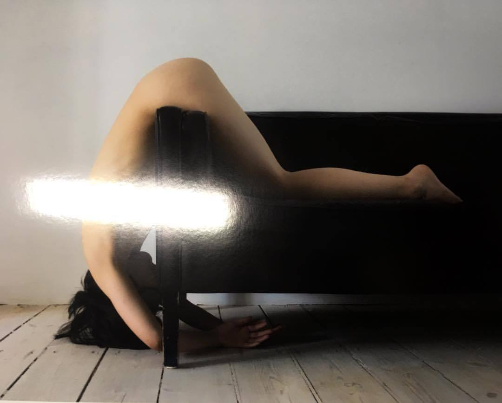

There's a dread we normally keep at the far edges of our minds but which occasionally - particularly at 3am on a restless night - floods our thoughts: ifwe don't constantly strive to achieve, if we slip up or if some new catastrophe strikes the economy, we'll lose pretty much everything and will have to end up living in a caravan, a tiny one-room flat or - god forbid - a hut in the middle of nowhere. The bleakness of this image spurs us to ever more franctic efforts. We'd settle for almost anything to avoid it: oppressively long working hours; a job that holds no interest; risky money-making schemes
There's a dread we normally keep at the far edges of our minds but which occasionally - particularly at 3am on a restless night - floods our thoughts: ifwe don't constantly strive to achieve, if we slip up or if some new catastrophe strikes the economy, we'll lose pretty much everything and will have to end up living in a caravan, a tiny one-room flat or - god forbid - a hut in the middle of
There's a dread we normally keep at the far edges of our minds but which occasionally - particularly at 3am on a restless night - floods our thoughts: ifwe don't constantly strive to achieve, if we slip up or if some new catastrophe strikes the economy, we'll lose pretty much everything and will have to end up living in a caravan, a tiny one-room flat or - god forbid - a hut in the middle of